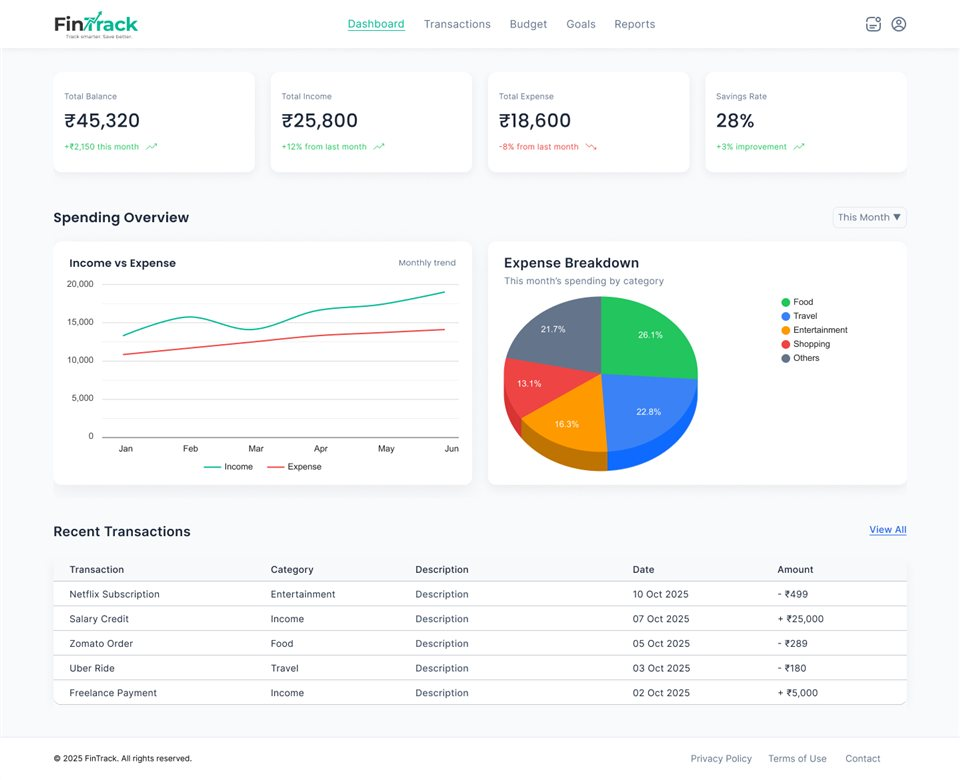

Case Study · 02
FinTrack
A personal finance dashboard I needed, so I designed it — then built it on the MERN stack.
Overview
FinTrack was born out of my own struggle to track expenses and understand my financial habits. Existing tools were either too complex or too manual, so keeping the habit never worked. I wanted instant visual clarity with minimal data-entry friction — and since nothing did that the way I wanted, I designed and built it.
It's also my proof-of-work for the React side of my skill set: the same person who drew every screen in Figma wrote the components, the state logic, and the API design.
The problem
Expense tracking dies as a habit when logging is tedious and the payoff is invisible. Most tools bury the "so what?" — you enter data for weeks before any insight appears. I needed a dashboard where one glance answers "where is my money going?"
The approach
A centralized dashboard built around interactive charts for immediate spending analysis. Frontend-first development: nail the experience and the data-visualization logic with React, then architect the MERN backend (MongoDB schema, REST endpoints) around proven UI needs rather than guessed ones.
The design side

Build log
Frontend architecture
Core UI in React 19 with state-driven animations — transaction logs, budget progress, and goal tracking as a coherent component system.
UX iteration
Currently refining dashboard density and navigation based on direct feedback from recruiters and industry designers — the product doubles as a feedback loop on my own craft.
Backend roadmap
Designing the MongoDB schema and RESTful endpoints to handle transaction relationships and multi-account syncing for full-stack deployment.
Where it stands
- A personal pain point translated into a high-fidelity, interactive dashboard
- Comprehensive frontend feature set: transaction logs, budget progress, goal tracking
- UX actively iterated on real feedback from industry professionals
- Scalable MERN foundation architected for full-stack deployment